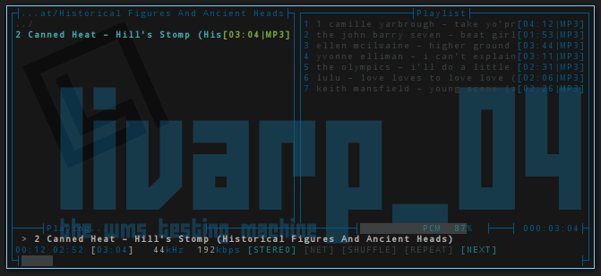

lang fr|gb

MOC player
MOCfor Music On Console, an ultra light ncurse audio player with an interface close to mc. His main feature is its serveur/client capacity, that allow you to close the client while listenning to music.
to launch it, simply type 'mocp' in a terminal or from a livarp menu; section applications:media:music player.
Moc uses keybinds, “h” and “?” brings you to help section.

keybinds
- tabulation key [Tab] let you switch from right/left panel
- Up and Down arrows let you navigate in directories
- the line with 2 points [..] means 'up dir'
- key 'q' close the moc client and let the server running
- key 'Q' close both client and moc server
- key 'Enter' enter a directory or play a file
- key n(ext) goto next title
- key b(efore) goto previous title
- key s(top) to stop playing music
- key p(play/pause) or Espace to pause moc player
- keys ',' and '.' to increase/decrease sound volume
- key a(add) to add file to the playlist
- key A(add all) to add e repertory to the playlist
- key g(get) to search in the playlist
- key S(shuffle) active random playing in the playlist
- key R(repeat) active repeat mode in the playlist
themes
moc can handle themes, they are located in /usr/share/moc/themes or ~/.moc/themes.
to have a transparent background:
configuration
moc can read a configuration file located in ~/.moc/config
this file is commented and easily understandable.